¿Cuánto son 75 milimetros?
Nació hacia 1915 en el New York Bar de París, hoy conocido como Harry's Bar. Su nombre hace referencia al cañón de campaña francés de 75 mm de la Primera Guerra Mundial, por lo contundente de su efecto.
RECETA
- 30 ml gin
- 15 ml jugo de limón
- 15 ml jarabe simple
- 60 ml champaña / vino espumoso
- Hielo
- Twist de limón
- Para preparar el jarabe simple, mezcla partes iguales de azúcar y agua caliente hasta que el azúcar se disuelva. Deja enfriar antes de usar.
- Agrega el gin, jugo de limón y jarabe simple a una coctelera con hielo.
- Agita bien y cuela en la copa.
- Completa con champaña o vino espumoso.
- Agregar y decorar con twist de limón
Vaso: Copa flauta